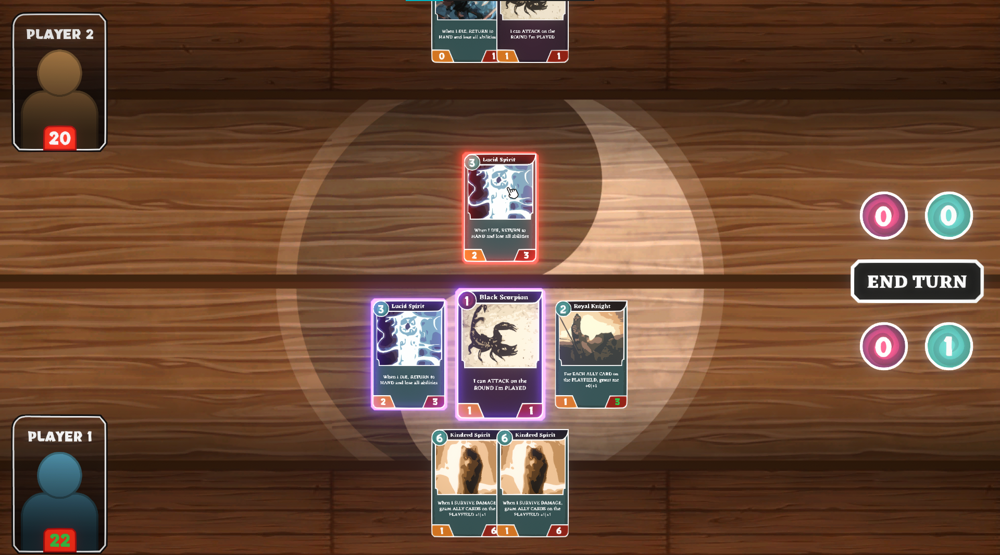
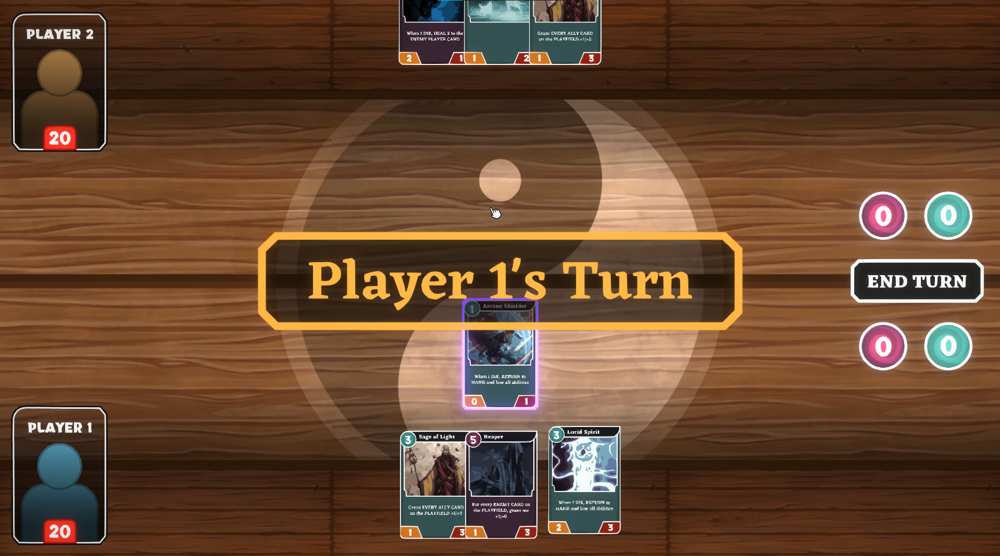

PROJECT
Overview

Team Size: 8 Members
Prototype Time: 48 Hours (Game Jam)
Full Development Time: Jan 2020 - April 2020
Development Tools: UE4, Photoshop, Blender
Genre: Puzzle Platformer
Platform: Windows PC
My Contributions
- Designed systems and levels
- Built levels and environments
- Designed UI and interaction
- Pipeline and design documentation
- Organized and led the team
- Ran meetings and weekly reviews
- Led the creative direction
DREAMSCAPE
Case Study
Project Summary
Dreamscape is a digital, local-multiplayer card game with a strategic emphasis on resource management, pitting players against each other in battle. I made Dreamscape during the final month of my Fall 2020 semester for a game design course. The goal for this project was to bring a game from concept to prototype phase using a heavily iterative cycle over a short period of development time. With only four weeks of total time, I had to design, document, and prototype the game congruently. Consequently, I had to revise the game’s design often as development progressed. Along with that came updating all the documentation too. I’m super pleased with how Dreamscape turned out, especially because of how much I had to juggle disciplines on the project.

Game Intent
The intent behind Dreamscape was to create a card game with an emphasis on resource management, forcing players to think more carefully about spending their resources on cards. I chose this genre because, at that time, I just started playing Legends of Runeterra, which got me interested in designing a digital card game of my own. Soon enough, I realized how resource management was one of the core skills used in collectible card games. Not only is the spending resource (mana for example) crucial to gameplay, but the cards themselves act as resources. I had a few ideas about how I would add my own twist to this aspect of the genre but decided on the most minimalistic option to focus more of my time on polish.
In Dreamscape, players have two mana types: light and dark. Each card also has one of those mana types, which dictates their main use. At the beginning of their turn, players are prompted to allocate their total mana into light and dark types, so they must choose based on their current hand and their intended strategy for victory. Light cards provide the player with buffs and benefits, while dark cards negatively impact the enemy’s cards. The intention of these two card categories was not only to push the focus towards resource management but also to encourage different play styles. I was worried the game would not stand well on its own if it didn't innovate in any way, which is why I designed the game around this light and dark mana system.
Development Process
I started Dreamscape’s development in Unity with the turn system, and the basic loop of actions each player takes in their turn. Once I had the basic game loop to work with, I poured all my focus into the card interaction system. The entire game would be interacted with through the mouse, and the cards are the core of the gameplay, so they had to feel polished and intuitive to interact with. This was by far the largest technical problem I faced. If card interaction didn’t feel smooth and intuitive to players, it would detract heavily from the game’s experience. In the very first iteration of the card system, players could only browse through their collection of cards by hovering over them, and the cards would also react to who’s turn it was. See the clip below.

Player browising their cards in hand.
Not long after this I realized the solution to making the card system work seamlessly required moving the objects dynamically with code instead of using Unity’s built-in animation system. I could use a lerp function to smoothly transition the size, position, color, or anything else I needed to change about the cards. This way, cards would always have an ease in their movement curve, making them feel smooth to handle with the mouse. With that figured out, I was able to make the cards playable. On their turn, each player could now play cards that they could afford by clicking and dragging them onto the board. With playable cards, I could finally add combat.
I struggled with the combat system for quite some time, but once I got it working, I could start designing the individual cards. I created a table of cards with some different abilities to start with and added their functionality to the attacking system. Most of these abilities worked in ways unique to each other, so I would have to program them individually, and couldn’t recycle much code. For example, one ability allows a card to attack the opponent on the round it’s played (which is normally not possible). This constraint limited the number of abilities and cards I could incorporate into the game, because I wanted to focus on quality over quantity. Finding a balance between all the abilities and cards also consumed lots of time. As I’ll later discuss, underestimating the amount of playtesting and balancing needed for Dreamscape would bring consequences.

Player selects a card and attacks their opponent with it
Now I had most of the main systems working, except for the mana system, which I based most of the game’s design around. Because the mana system would rely heavily on a polished user interface, I wanted to first focus on adding visual and audible effects to all the mouse interactions. I spent a good amount of time creating a tool for highly customizable button objects, so I could always dynamically adjust the size and speed of changes with a simple value. This way I could avoid using animations for each UI effect, which can be very bothersome to work with at times. Now that I had audio and visual effects for the UI, I designed and implemented the mana system. These tools made implementing this system much smoother than it would have been otherwise, and going forward I’m going to take this approach more often.

Player dragging their card onto the board to play it.
I had everything I needed functioning well enough, but there was plenty of room for polish on every system, so I spent the next few days on that. Initially I focused on visual feedback, because it felt very lacking for a digital card game at first. On the cards I created an edge glow to indicate how the player can interact with them. For example, golden cards can be played and purple cards can attack. I also made the board glow a bright golden color if the player dragged a card they could play outside their hand. Then I added some particle effects for card damage and card deaths.

After switching turns, the other player gets to choose their mana.
As usual, I really enjoyed this phase where I got to add all the sound effects, music, artwork, and visual feedback to the game. My favorite part of any game’s development is bringing it to a level of polish that illustrates something close to the vision in my head. I love when the game can speak for itself, and I can just let someone play it and they’ll understand what the team (or just myself in this case) was picturing. However, the work wasn’t over, because I still had playtesting to do, which also meant bug fixing and balancing the game based on feedback, then testing again.
Because making a networked game was totally unrealistic for the scope of this project, I created Dreamscape with the intention of testers using Parsec, which is a free program that allows people to play local multiplayer games together remotely. This way I could have testers connect to my PC from anywhere via Parsec and we could playtest Dreamscape. As expected I got loads of immediate feedback and found many bugs right off the bat. Earlier I mentioned how my neglection of playtesting would bite back down the line, and it did. I didn’t have enough time to do proper iterations with testing, and couldn’t revise the game as much as I’d wanted to. The number of systems I implemented came with the cost of the extra time I needed for playtesting. Despite this mishap, I’m very satisfied with how the game turned out, especially with all it’s gameplay systems and polished look/feel. Although, I should say that this one testing session improved the game immensely, and gave me plenty of ideas for huge overhauls to make in the future if I decide to come back to the game.